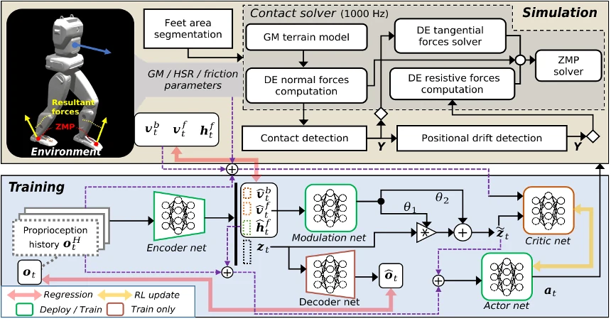

MILD: Tractable Terrain Modeling for Learning Improved Bipedal Locomotion on Deformable Surfaces
MILD combines physics-grounded deformable-terrain simulation with terrain-aware reinforcement learning to enable bipedal robots to adapt naturally across surfaces with varying stiffness.
- Embodied AI
- Robot Learning